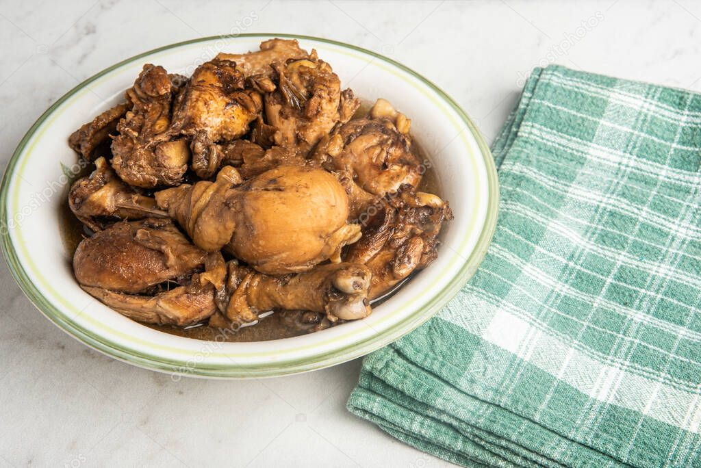

CHICKEN ADOBO RECIPE

Chicken Adobo is one of the famous dishes in The Philippines
Ingredients
- 4 to 5 pounds Chicken thighs
- 1/2 cup White Vinegar
- 1/2 cup Soy Sauce
- 4 cloves garlic, crushed
- 1 teaspoon black peppercorns
- 3 bay leaves
- Steamed Rice, for serving
Steps
- Combine the chicken thighs, vinegar, soy sauce, garlic, peppercorns and bay leaves in a large pot.
- Cover and marinate the chicken in the refrigerator for 1 to 3 hours.
- Bring the chicken to a boil over high heat. Lower the heat, cover and let simmer for 30 minutes, stirring occasionally.
- Remove the lid and simmer until the sauce is reduced and thickened and the chicken is tender, about 20 more minutes.
- Serve with steamed rice.